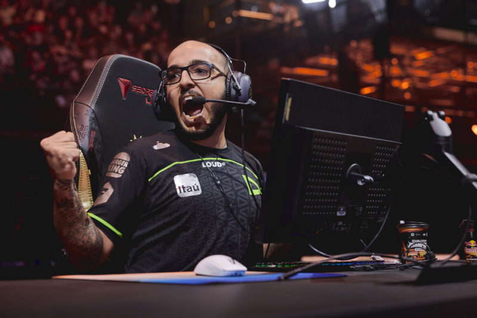
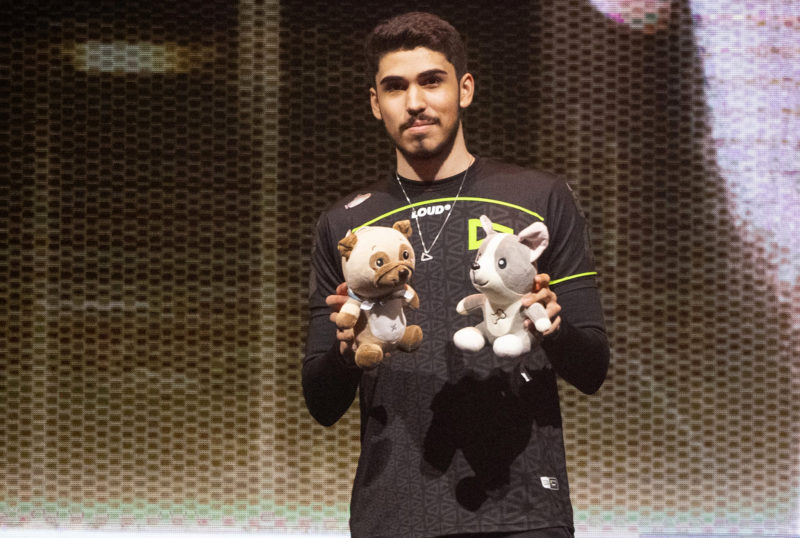

VALORANT Champions 2022: LOUD vence a OpTic e é campeã mundial
A LOUD é campeã mundial de VALORANT. Neste domingo (18), a equipe brasileira venceu a norte-americana OpTic pela decisão do VALORANT Champions 2022 por 3 a 1 nos mapas Ascent (15-13), Bind (6-13), Breeze (16-14) e Haven (13-5), conquistando o titulo mundial do FPS da Riot Games.
A decisão teve início na Ascent e ambas as equipes tiveram bons momentos, porém no fim a LOUD levou a melhor por 15-13 e abriu 1 a 0. A OpTic rapidamente respondeu na Bind e deixou tudo igual com uma triunfo por 13-6. A Breeze veio na sequência e o duelo foi muito acirrado, mas os brasileiros conseguiram vencer o mapa por 16-14 e criaram uma vantagem de 2 a 1.
(Foto: Riot Games)
Na Haven, quarto e último mapa do confronto, a LOUD apresentou novamente um VALORANT sólido. A equipe brasileira contou com mais uma ótima partida de aspas para vencer por 13-5, fechar a série em 3 a 1 e conquistar o título mundial de VALORANT.
Com a vitória, a LOUD levou para casa uma premiação de 300 mil dólares e o título de campeã mundial de VALORANT, enquanto a vice OpTic ficou com 150mil USD.
VALORANT Champions 2022: aspas é eleito o MVP da Grande Final
Com o título do VALORANT Champions 2022 conquistado pela LOUD, o MVP da Grande Final não poderia ser de outra equipe. Jogador da organização brasileira, aspas foi eleito o melhor jogador do confronto decisivo do torneio.
(Foto: Riot Games)
No confronto final, aspas terminou a série com um total de 71 eliminações, 15 assistências e 68 abates, um saldo positivo de +3 no K/D. Além disso, o jogador ficou com 75% de KAST, que é a participação efetiva na rodada, e um dano médio por round de 158.3. Por fim, aspas obteve um ACS (Pontuação Média de Combate) de 248.4 e 22% de taxa de head shot.
Após a grande final, toda a comunidade brasileira reagiu de forma eufórica ao título, até então inédito. Os jogadores da OpTic também parabenizaram a LOUD pelo título.